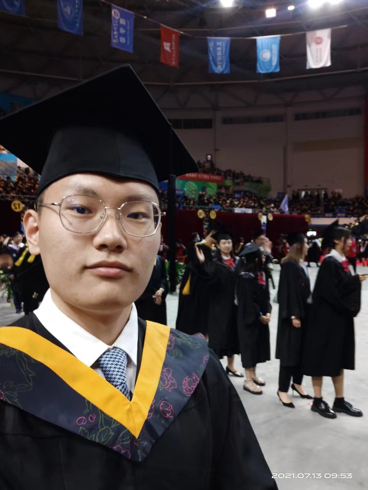

|
Zeyu Li (李泽宇)
|
 |
Studying for a master's degree,
Communication University of China,
State Key Laboratory of Media Convergence and Communication
No. 1 East Dingfuzhuang Street,
Beijing City, China
E-mail: lizeyu@cuc.edu.cn
|
About me
I received a bachelor's degree in computer science and technology from the Beijing University of Technology in 2016 and started to study for a master's degree at the Communication University of China in 2020. I am currently a master's student at the Media Big Data Center of the State Key Laboratory of Media Convergence and Communication, Communication University of China. My main research interests include natural language processing, deep learning, and recommender systems. In addition, I have also done some research on knowledge graphs, such as the Chinese short text matching optimization algorithms based on external knowledge. I focus on using AI to solve real problems in journalism.
Research
My research interests include:
Current work
Under review
Z. Li*, H. Shen, H. Ma, T. Yu, "VMKGAN: An Efficient Multimodal News Recommendation Model".
Z. Li*, H. Ma, Y. Lv, H. Shen, "Joint extraction of entities and relations in the news domain".
H. Ma*, Z. Ding, Z. Li, H. Guo, "A Hybrid Model Based on External Knowledge and Data Augmentation for Chinese Short Text Matching".
Recent publications
Z. Li*, T. Yu, H. Shen, "Research on Opinion Targets Extraction of Travel Reviews Based on RoBERTa Embedded BILSTM-CRF Model.", 2021 International Conference on Culture-oriented Science & Technology (ICCST). IEEE, 2021. [pdf]
H. Ma*, Z. Ding, Z. Li, H. Guo, "OTE: An Optimized Chinese Short Text Matching Algorithm Based on External Knowledge.", In International Conference on Knowledge Science, Engineering and Management, pp. 15-30, Springer, Cham. [pdf]
Note: * indicates the corresponding author.
Full list of publications in Google Scholar.
Projects
HongKong, Macao and Taiwan Internet Information Report, Tongji University, Feb. 2021 – Present
Crawler technology and text classification technology are used to crawl and summarize public opinion data.
Emotion analysis and text classification are carried out for relevant texts of specific topics.
Intelligence Campus, Communication University of China, Oct. 2020 – Apr. 2021
Deign and implement the large screen of scientific research, using Datav to comprehensively display the scientific research achievements of school.
Design data portals using Vue and Flask frameworks.
Genetic Programming Inferences Regular Expressions, Chinese Academy of Science, Sep. 2019 – Aug. 2020
Design a heuristic regular expression generator based on genetic programming.
Automatically generate an optimal regular expression that completely matches the positive example set and completely does not match the negative example set.
Construction of Knowledge Graph on Financial News Data Set, BJUT, Sep. 2019 – Aug. 2020 Automatic Class Check-in System Based on Face Recognition, BJUT, Sep. 2017 – Aug. 2018
Education
M.E., Pattern Recognition and Intelligent Systems, Xiamen University, 06.2016
Awards: Principal Level Scholarship (1st in admission)
Main Courses: Machine Learning, Design of Neural Networks, Digital Image Processing, Time Series Analysis, Pattern Recognition, Data Mining and Its Application, Artificial Intelligent: Theory and Application, Recommender System.
B.E., Automation, Zhejiang University of Science and Technology, 06.2012
Main Courses: C Programming, Embedded Systems, Computer Network and Communication, Computer Control System.
Competitions and awards
First-Class Scholarship, Zhejiang University of Science and Technology, 10.2011
National Encouragement Scholarship, 12.2011 & 12.2010
The 2nd Prize in the National Advanced Mathematics Contest for Undergraduates (Zhejiang), 12.2011
The 2nd Prize in the Zhejiang Advanced Mathematics Contest for Undergraduates, 04.2011
The 3rd Prize in the Zhejiang Advanced Mathematics Contest for Undergraduates, 10.2009 & 04.2010
The 3rd Prize in the Zhejiang Physics Contest for Undergraduates, 12.2009 & 12.2010
The 1st Prize in the Electronics Design Contests, Zhejiang University of Science and Technology, 12.2010
Activities
Teaching Assistant, Xiamen University, 09.2013-01.2014 Assistant Mentor, Zhejiang University of Science and Technology, 09.2010-06.2011 Journalist, Press Corps of Zhejiang University of Science and Technology, 12.2008-06.2011 Founder and Editor in Chief, Say Ourselves, E-magazine, 12.2009-08.2011
Work experience
Research Scientist, AI Research Institute, Hithink RoyalFlush, 06.2019-Present
Research the newest machine learning algorithms and recommender system technology on stocks and hot news
Apply neural network models to drug-target interaction prediction and evaluate the performance
Publish papers and apply for relevant patents for the corporation
Give lessons on Artificial Intelligence and Recommender Systems to the staff
Research Assistant, Big Data Lab, Xiamen University, 09.2016-02.2019
Instructed two undergraduate and three graduate students in scientific research
Tracked, studied, reproduced, and improved up-to-date machine learning methods
Published papers on machine learning and recommender systems
Software Engineer, Dragon SOFT, 07.2013-06.2014
Developed an electronic target practice system for security guards’ shooting training
Recorded the track of users’ shooting behavior from sensors in a database
Built a model analyzing users’ shooting behavior concerning speed, acceleration and number of cylinders
Assistant Engineer, Gold Electronic, 03.2012-07.2012
Cooperated with motor companies, such as Zotye and BYD, on battery management system development
Developed a testing and analytics platform for performance of a lithium battery with C# (real-time data)
Used CAN bus to collect working data of batteries and analyzed the data for balance power
A brief cv.
|